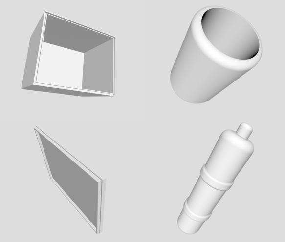

<div id="single-portfolio">
	<div id="portfolio-details" class="container">
		<a class="close-folio-item" href="#"><i class="fa fa-times"></i></a>
		
		<div class="row">
			<div class="col-sm-9">
				<div class="project-info">
					<h3>3D 모델링</h3>
					<p>123D 프로그램으로 모델링작업을 거치고 3D 프린터로 1차, 2차 테스트 품목을 출력했다.</p>
					<p>이 결과물을 바탕으로 작품제작시 발생할 수 있는 문제점을 파악하고 도면도작성에 참고할 수 있도록 한다.  </p>
				</div>
            </div>
		</div>
	</div>
</div>